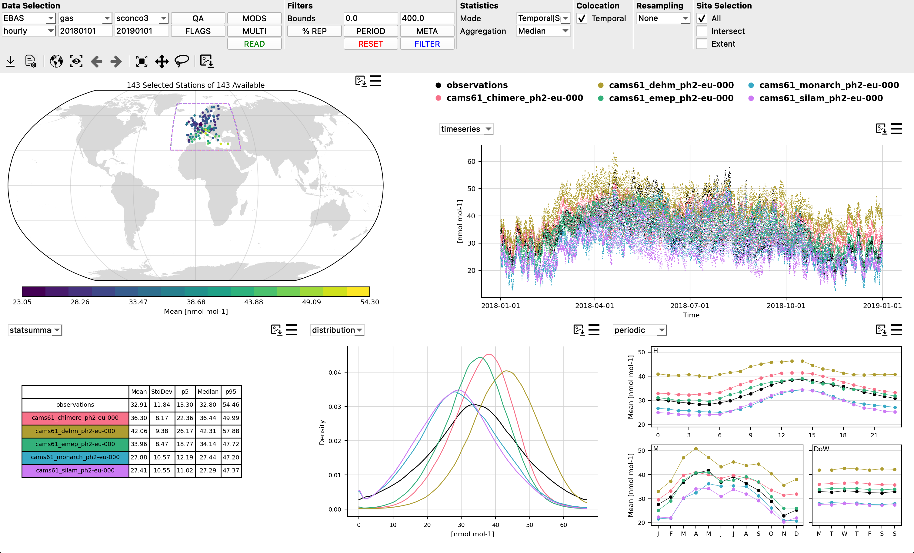
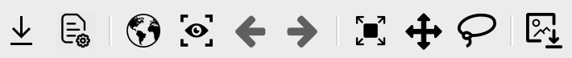
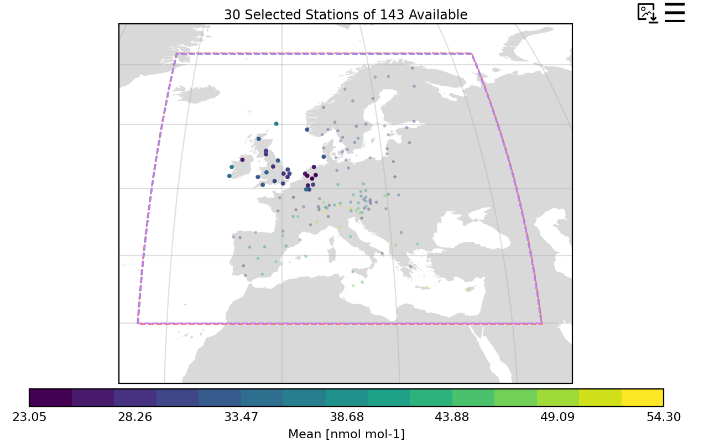
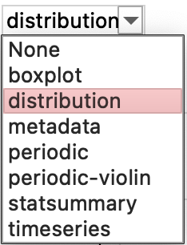
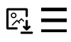
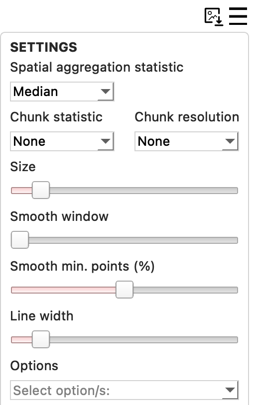
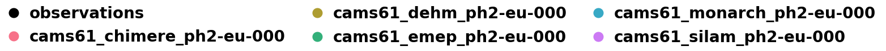

Dashboard
Providentia’s dashboard was designed to allow for interactive quick-look visualisations of observations and colocated model output.

Toolbar
Directly under the menu bar, there is a toolbar that gives several useful options:

In order from left to right, these are:
Export: Exports the active state of the dashboard. This can be done to save the loaded data (both observations and model data) directly as a NetCDF or Numpy file, or to save the current state as a configuration file. For more information about exported data see Saved file formats.
Load: This can be used to load a configuration file from a previous evaluation session. For instance, those saved using the export button. If there is more than one section or subsection, users will be asked to choose which one they want to load.
World view: Sets the map to the entire world view.
Original state: Returns all plots to their initial states.
Undo: Undos a plot action, i.e. undos a zoom on a plot
Redo: Redos a plot action, i.e. redos a zoom on a plot
Zoom: To zoom in on area, on any plot. Users can also scroll with the mouse wheel to do this progressively while on the map.
Pan: To pan around on any plot.
Lasso: When this is toggled on, by holding down the left mouse button over the map a lasso will appear allowing multiple stations within a closed lasso to be selected. Remember to un-toggle this to go back to normal station selection.
Save: To save a screenshot of all current plots.
Plot interactivity
Selecting stations

Once data has been loaded on the dashboard, by left clicking on a station the map, multiple plots will appear showing data for that station.
Multiple stations can also be selected at once. This can by doing by using the site selection menu options, or by using the toolbar lasso, or a third way is to right click on a station while another is selected. By right clicking on an already selected station, it will be unselected.
When multiple stations are selected, data on the plots will reflect an aggregation across all selected stations (controlled via the information set in the Statistics section on the menu bar).
Changing plots

When at least one station is selected on the map, four other plots will be visible.
Each plot (except the map) can be switched to a different plot, by clicking the drop-down menu in the top left of each plot. A plot can also be deactivated entirely by clicking None.
See here for more information about all available plot types, and see here for more information about plot customisation.
Plot settings
Each plot will be accompanied with two buttons in the top right corner of the plot.
The first icon is a save button which allows individual plots to be saved as a figure.

The second is a burger menu icon, which after clicking reveals a plot settings menu, where multiple options to interactively customise the plot are revealed (e.g. point size, or smoothing for the timeseries).

At the bottom of the settings window is a drop-down menu for plot options, where by selecting one or more of these options you can dramatically alter the plot in some way.
One major plot option to note is bias. By selecting bias what is plotted is the result of the model - observations (i.e. bias). On the map, rather than selecting bias as a plot option, it can be obtained by selecting a secondary dataset. The bias will be calculated by the two active datasets.
On some plots, the plotted statistic can also be altered though the settings menu, e.g. periodic.
See here for more information about all available plot options.
Legend

The legend in the upper right of the dashboard displays which data is currently loaded on the dashboard (observations and model names). The legend is interactive, so by clicking on any data type, the respective data for that type will be hidden, or shown, on all plots.